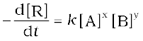
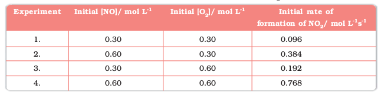
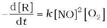
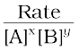
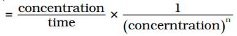
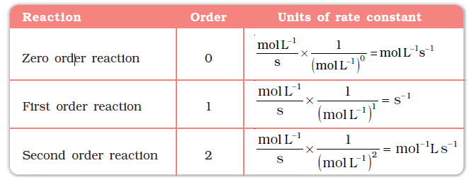
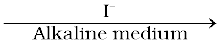
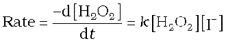

4.2 Factors Influencing Rate of a Reaction
Rate of reaction depends upon the experimental conditions such as concentration of reactants (pressure in case of gases), temperature and catalyst.
4.2.1 Dependence of Rate on Concentration
The rate of a chemical reaction at a given temperature may depend on the concentration of one or more reactants and products. The representation of rate of reaction in terms of concentration of the reactants is known as rate law. It is also called as rate equation or rate expression.
4.2.2 Rate Expression and Rate Constant
The results in Table 4.1 clearly show that rate of a reaction decreases with the passage of time as the concentration of reactants decrease. Conversely, rates generally increase when reactant concentrations increase. So, rate of a reaction depends upon the concentration of reactants.
Consider a general reaction
aA + bB → cC + dD
where a, b, c and d are the stoichiometric coefficients of reactants and products.
The rate expression for this reaction is
Rate ∝ [A]X [B]y (4.4)
where exponents x and y may or may not be equal to the stoichiometric coefficients (a and b) of the reactants. Above equation can also be written as
Rate = k [A]x [B]y (4.4a)
 (4.4b)
This form of equation (4.4 b) is known as differential rate equation, where k is a proportionality constant called rate constant. The equation like (4.4), which relates the rate of a reaction to concentration of reactants is called rate law or rate expression. Thus, rate law is the expression in which reaction rate is given in terms of molar concentration of reactants with each term raised to some power, which may or may not be same as the stoichiometric coefficient of the reacting species in a balanced chemical equation. For example:
2NO(g) + O2(g) → 2NO2 (g)
We can measure the rate of this reaction as a function of initial concentrations either by keeping the concentration of one of the reactants constant and changing the concentration of the other reactant or by changing the concentration of both the reactants. The following results are obtained (Table 4.2).
Table 4.2: Initial rate of formation of NO2
It is obvious, after looking at the results, that when the concentration of NO is doubled and that of O2 is kept constant then the initial rate increases by a factor of four from 0.096 to 0.384 mol L–1s–1. This indicates that the rate depends upon the square of the concentration of NO. When concentration of NO is kept constant and concentration of O2 is doubled the rate also gets doubled indicating that rate depends on concentration of O2 to the first power. Hence, the rate equation for this reaction will be
Rate = k[NO]2[O2]
The differential form of this rate expression is given as

Now, we observe that for this reaction in the rate equation derived from the experimental data, the exponents of the concentration terms are the same as their stoichiometric coefficients in the balanced chemical equation.
Some other examples are given below:
Reaction Experimental rate expression
1. CHCl3 + Cl 2 → CCl 4 + HCl Rate = k [CHCl3 ] [Cl 2]1/2
2. CH3COOC2H5 + H2O → CH3COOH + C2H5OH Rate = k [CH3COOC2H5]1 [H2O]0
In these reactions, the exponents of the concentration terms are not the same as their stoichiometric coefficients. Thus, we can say that:
Rate law for any reaction cannot be predicted by merely looking at the balanced chemical equation, i.e., theoretically but must be determined experimentally.
4.2.3 Order of a Reaction
In the rate equation (4.4)
Rate = k [A]x [B]y
x and y indicate how sensitive the rate is to the change in concentration of A and B. Sum of these exponents, i.e., x + y in (4.4) gives the overall order of a reaction whereas x and y represent the order with respect to the reactants A and B respectively.
Hence, the sum of powers of the concentration of the reactants in the rate law expression is called the order of that chemical reaction.
Order of a reaction can be 0, 1, 2, 3 and even a fraction. A zero order reaction means that the rate of reaction is independent of the concentration of reactants.
A balanced chemical equation never gives us a true picture of how a reaction takes place since rarely a reaction gets completed in one step. The reactions taking place in one step are called elementary reactions. When a sequence of elementary reactions (called mechanism) gives us the products, the reactions are called complex reactions. These may be consecutive reactions (e.g., oxidation of ethane to CO2 and H2O passes through a series of intermediate steps in which alcohol, aldehyde and acid are formed), reverse reactions and side reactions (e.g., nitration of phenol yields o-nitrophenol and p-nitrophenol).
Units of rate constant
For a general reaction
aA + bB → cC + dD
Rate = k [A]x [B]y
Where x + y = n = order of the reaction
k = 
 (where [A]=[B])
Taking SI units of concentration, mol L–1 and time, s, the units of k for different reaction order are listed in Table 4.3
Table 4.3: Units of rate constant

Example 4.3
Calculate the overall order of a reaction which has the rate expression
(a) Rate = k [A]1/2 [B]3/2
(b) Rate = k [A]3/2 [B]–1
Solution
(a) Rate = k [A]x [B]y
order = x + y
So order = 1/2 + 3/2 = 2, i.e., second order
(b) order = 3/2 + (–1) = 1/2, i.e., half order.
Example 4.4
Identify the reaction order from each of the following rate constants.
(i) k = 2.3 × 10–5 L moL–1 s–1
(ii) k = 3 × 10–4 s–1
Solution
(i) The unit of second order rate constant is L moL–1 s–1, therefore k = 2.3 × 10–5 L moL–1 s–1 represents a second order reaction.
(ii) The unit of a first order rate constant is s–1 therefore k = 3 × 10–4 s–1 represents a first order reaction.
4.2.4 Molecularity of a Reaction
Another property of a reaction called molecularity helps in understanding its mechanism. The number of reacting species (atoms, ions or molecules) taking part in an elementary reaction, which must collide simultaneously in order to bring about a chemical reaction is called molecularity of a reaction. The reaction can be unimolecular when one reacting species is involved, for example, decomposition of ammonium nitrite.
NH4NO2 → N2 + 2H2O
Bimolecular reactions involve simultaneous collision between two species, for example, dissociation of hydrogen iodide.
2HI → H2 + I 2
Trimolecular or termolecular reactions involve simultaneous collision between three reacting species, for example,
2NO + O2 → 2NO2
The probability that more than three molecules can collide and react simultaneously is very small. Hence, reactions with the molecularity three are very rare and slow to proceed.
It is, therefore, evident that complex reactions involving more than three molecules in the stoichiometric equation must take place in more than one step.
KClO3 + 6FeSO4 + 3H2SO4 → KCl + 3Fe2(SO4)3 + 3H2O
This reaction which apparently seems to be of tenth order is actually a second order reaction. This shows that this reaction takes place in several steps. Which step controls the rate of the overall reaction? The question can be answered if we go through the mechanism of reaction, for example, chances to win the relay race competition by a team depend upon the slowest person in the team. Similarly, the overall rate of the reaction is controlled by the slowest step in a reaction called the rate determining step. Consider the decomposition of hydrogen peroxide which is catalysed by iodide ion in an alkaline medium.
2H2O2  2H2O + O2
The rate equation for this reaction is found to be

This reaction is first order with respect to both H2O2 and I–. Evidences suggest that this reaction takes place in two steps
(1) H2O2 + I– → H2O + IO–
(2) H2O2 + IO– → H2O + I– + O2
Both the steps are bimolecular elementary reactions. Species IO- is called as an intermediate since it is formed during the course of the reaction but not in the overall balanced equation. The first step, being slow, is the rate determining step. Thus, the rate of formation of intermediate will determine the rate of this reaction.
Thus, from the discussion, till now, we conclude the following:
(i) Order of a reaction is an experimental quantity. It can be zero and even a fraction but molecularity cannot be zero or a non integer.
(ii) Order is applicable to elementary as well as complex reactions whereas molecularity is applicable only for elementary reactions. For complex reaction molecularity has no meaning.
(iii) For complex reaction, order is given by the slowest step and molecularity of the slowest step is same as the order of the overall reaction.